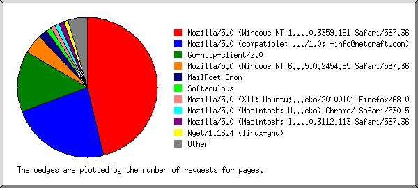

(Go To: Top | General Summary | Monthly Report | Daily Summary | Hourly Summary | Domain Report | Organization Report | Failed Referrer Report | Referring Site Report | Browser Report | Browser Summary | Operating System Report | Status Code Report | File Size Report | File Type Report | Directory Report | Request Report)

Listing browsers with at least 1 request for a page, sorted by the number of requests for pages.
| #reqs | #pages | browser |
|---|
| 42 | 42 | Mozilla/5.0 (Windows NT 10.0; Win64; x64)AppleWebKit/537.36 (KHTML, like Gecko) Chrome/66.0.3359.181 Safari/537.36 |
| 21 | 21 | Mozilla/5.0 (compatible; NetcraftSurveyAgent/1.0; +info@netcraft.com) |
| 13 | 13 | Go-http-client/2.0 |
| 4 | 4 | Mozilla/5.0 (Windows NT 6.1; WOW64) AppleWebKit/537.36 (KHTML, like Gecko) Chrome/45.0.2454.85 Safari/537.36 |
| 2 | 2 | MailPoet Cron |
| 1 | 1 | Softaculous |
| 1 | 1 | Mozilla/5.0 (X11; Ubuntu; Linux x86_64; rv:68.0) Gecko/20100101 Firefox/68.0 |
| 1 | 1 | Mozilla/5.0 (Macintosh; U; Mac OS X 10_5_7; en-US) AppleWebKit/530.5 (KHTML, like Gecko) Chrome/ Safari/530.5 |
| 1 | 1 | Mozilla/5.0 (Macintosh; Intel Mac OS X 10_12_6) AppleWebKit/537.36 (KHTML, like Gecko) Chrome/60.0.3112.113 Safari/537.36 |
| 1 | 1 | Wget/1.13.4 (linux-gnu) |
| 1 | 1 | Mozilla/5.0 (Linux; U; Android 4.4.2; en-us; SCH-I535 Build/KOT49H) AppleWebKit/534.30 (KHTML, like Gecko) Version/4.0 Mobile Safari/534.30 |
| 1 | 1 | Mozilla/5.0 (X11; Linux x86_64) AppleWebKit/537.36 (KHTML, like Gecko) Chrome/58.0.3029.110 Safari/537.36 |
| 2 | 1 | okhttp/4.1.0 |
| 1 | 1 | Mozilla/5.0 (Macintosh; Intel Mac OS X 10.11; rv:47.0) Gecko/20100101 Firefox/47.0 |
| 70 | 0 | [not listed: 3 browsers] |
 Web Server Statistics for bettermancoach.com.knowledgedr.com
Web Server Statistics for bettermancoach.com.knowledgedr.com ) represents 2 requests for pages or part thereof.
) represents 2 requests for pages or part thereof.